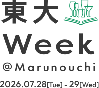

知が 躍動する まちへ
今、アクティブに働く人にこそ学びが必要だ。
最先端の知があらゆる垣根を越え、
キャンパスを飛び出し、
私たちを刺激しにやってくる。
好奇心と志を持って集おう、
共に学ぼう、未来をつくろう。
Overview
東京大学から様々な専門分野の教員を招き、大手町・丸の内・ 有楽町エリア（大丸有エリア）の会場で講演を行います。講演終了後には、軽食やドリンク（アルコール含む）をお楽しみいただきながら、講演者や参加者同士で交流いただけるネットワーキングの時間をご用意しております。是非ご参加ください！
- 名称：
- 東大Week@Marunouchi
- 主催：
- MEC-UTokyo Lab
- 日時：
- 2026年7月28日（火）・7月29日（水）
- 申込み：
- 2026年7月3日（金）12:30～受付開始
- 参加費：
- 各会場1,000円（軽食・ドリンク含）
※事前申込制となります。
※日時・会場・登壇者は場合により変更となる可能性がございます。
Program
7月28日は基調講演と3名の登壇者によるクロストークを開催、7月29日は３会場に分かれて単独の登壇者による講演を行います。お申し込みはイベント管理サービスの「Peatix（要事前登録）」からお願いいたします。
※開催日毎に実施時間等が異なります。ご注意ください。
※「申し込む」ボタンをクリックするとPeatixの申し込みページに遷移いたします。
3×3 Lab Future
研究発表
変わり続ける神田、受け継がれる神田：歴史資産とまちの記憶
神田は、大学、専門学校、予備校、病院、出版社、古書店街、楽器店など、多様な文化が集積するまちとして発展してきました。その魅力は、祭りや地名、老舗ビジネス、路地や界隈文化など、長い時間をかけて育まれてきた都市の記憶の重なりの中にあります。本講演では、神田がどのような歴史と文化を育んできたのかを読み解きます。150年前に東京大学が生まれた地であることにも着目し、そのことが今日の神田にいかなる意味を持つのかについても考えます。
クロストーク
神田の未来を語ろう――歴史・アート・居場所のあるまちへ
神田には、古書店街や大学、老舗の飲食店、祭り、路地や坂道など、長い時間をかけて育まれてきた独自の文化が息づいています。一方で、新しいビジネスや地域活動、人々の交流も加わり、まちは今も変化を続けています。本クロストークでは、歴史や文化資産、アート、まちづくり、都市計画という異なる視点から、神田の魅力と未来について語り合います。変わりゆく都市の中で、人々が集い、学び、表現し、居場所を見つけられるまちとはどのようなものか。歴史を未来への資源として活かしながら、これからの神田の可能性を考えます。
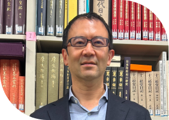
松田 陽
東京大学大学院
人文社会研究科
准教授
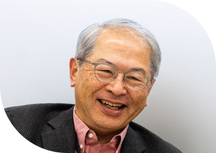
横張 真
東京大学
総括プロジェクト機構
特任教授
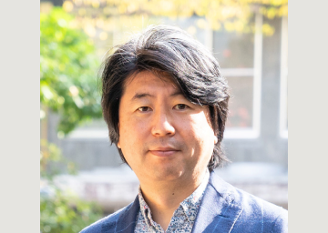
伊藤 達矢
東京藝術大学
社会連携センター長／教授
ネットワーキング（懇親会）
DAY2は3会場同時開催
7月29日は3会場同時開催となります。ご希望の会場を選んでお申込みください。各会場の講演は2部構成となります。
※講演毎のお申込みやネットワーキング（懇親会）のみのお申込みはできません。
※全会場同時間帯の開催となるため、複数会場の申込みはできません。ご希望の会場を1つお選びいただき、1部・2部+ネットワーキング（懇親会）を通して
ご参加をお願いいたします。

3×3 Lab Future
見えない世界を読み解く～匂いの価値と深海探査～
意識の外で私たちに影響を与える「匂い」と、いまだ全貌が明らかになっていない「深海」。一見異なる二つの研究から、私たちの身近に存在する「見えない世界」を読み解き、人類がまだ知らない世界の広がりに迫ります。
匂いの価値とその可能性
嗅覚は歴史的に、主観的で動物的な感覚、さらには五感の中で最も不要な感覚として軽視されてきました。しかし実際には、ヒトの全遺伝子約2万のうち約2％が匂いを受容する嗅覚受容体遺伝子であり、その多さは嗅覚の生存上の重要性を示しています。本講演では、「意識の外にある感覚」としての嗅覚が脳や心身に及ぼす影響を紹介し、認知症予防やウェルビーイング向上など、匂いが持つ未来の可能性について議論します。
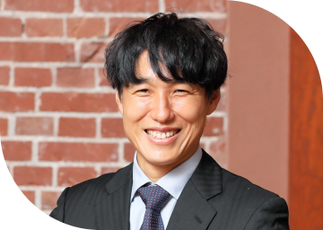
竹内 春樹
東京大学大学院
理学系研究科生物科学専攻
教授
地図のないところに行きたい
ー深海を探査する
Google Earthを見ると、海の下にも山脈や台地など多様な地形があることがわかります。しかし、この海底のでこぼこの7割は「推定」で実測ではありません。海底の地形は、惑星地球の構造や活動の仕組み、そして歴史を理解するための最も基本的なデータのひとつですが、いまだ正確な地図がない世界が広がっています。何を求めて地図のないところへ行くのか、探査の様子を交えてお話したいと思います。
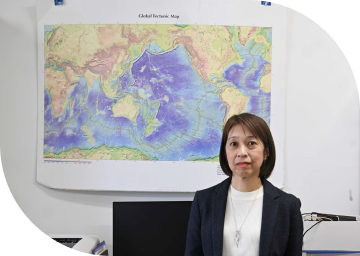
沖野 郷子
東京大学
大気海洋研究所
教授
ネットワーキング（懇親会）
DMO Tokyo
Marunouchi
「ヒトの進化」と「国際秩序」から読み解く人間社会の起源とあり方
ヒトはどのように進化し、集団を形成してきたのか。国家はなぜ競争し、ときに協力しながら国際秩序を築いているのか。霊長類から人類への進化と、現代の国際政治という異なる視点から、人間社会の起源とそのあり方を考えます。
サルからヒトへ進化した道筋の話: 人間らしさの霊長類的起源
ヒトはあらゆる環境へ進出し著しい適応を果たした霊長類です。霊長類としてのサルらしさを備えながらも、多くの違いを持ち、人間性を成立させてきました。その背景には、言語などの人間固有な「能力」を獲得したことや、集団で知識や技能を向上させる「文化」を持つことが関係しています。人らしさを生み出した生物学的な背景についてお話したいと思います。
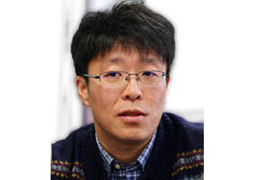
香田 啓貴
東京大学大学院
総合文化研究科
准教授
トランプ時代の国際秩序と日本の戦略的選択
本講演では、トランプ時代における国際秩序の変化を、米国の対外政策、同盟関係、米中競争、経済安全保障の観点から整理します。トランプ政権の外交は、従来の自由主義的国際秩序を前提としたものではなく、米国の国益をより直接的に追求するものです。そのなかで日本は、日米同盟を基軸としつつも、対米依存だけでは十分ではない時代に入っています。本講演では、防衛力、経済安全保障、重要技術、サプライチェーン、対中関係、グローバルサウス外交を含め、日本がいかに戦略的自律性と国際協調を両立させるべきかを考えます。
川井 大介
東京大学
先端科学技術研究センター
特任助教
ネットワーキング（懇親会）
Inspired. Lab
食とデザインから考える未来のかたち
私たちはどのような未来を望み、どのように形にしていくのでしょうか。人工的にデザインされた生命や食が問いかける倫理と、未来を構想するためのデザインの実践。二つの観点から、人間が未来を創造する力と責任について考えます。
サーモンになった魚たち：デザインされる生命が問う食の倫理
私たちは食べるものによってつくられます。身体だけでなく、私たちがなにものであるのか、というアイデンティティもまた、食べもの／食べるということによって構成されています。では、人工的にデザインされた食に囲まれた私たちは、いったいなにものになろうとしているのでしょうか。サーモンという枠の中に囲まれた魚たちおよび細胞たちの物語から、現代の食の倫理についてひもといてみましょう。
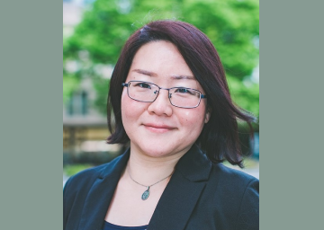
福永 真弓
東京大学大学院
新領域創成科学研究科
教授
未来を描く
私が先端技術に形を与えるときの、最初のプロトタイプはスケッチです。手描きのスケッチは個人の技能に依存し、２次元の描線に限定された表現手法でしかありませんが、個人の思考の複雑さに柔軟に対応する手軽さがあり、必要に応じたミニマルな表現を可能にします。AIによって驚くべきリアリティと空気感を持つ未来図を生成できる時代だからこそ、思考の外在化としての手描きのスケッチの役割が明確になったとも言えると思います。
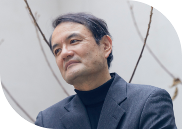
山中 俊治
デザインエンジニア /
東京大学特別教授
ネットワーキング（懇親会）
DAY1 7.28 [Tue]
3×3 Lab Future東京都千代田区大手町１丁目１−２ 大手門タワー・ENEOSビル 1F
横張 真
東京大学
総括プロジェクト機構
特任教授
東京大学大学院新領域創成科学研究科教授、東京大学大学院工学系研究科教授等を経て、2024年より現職。（公社）日本都市計画学会長、（公社）日本造園学会会長、東京オリンピック・パラリンピック組織委員会委員、（公社）都市緑化機構理事長、国土交通省社会資本整備審議会委員等を務める。日本造園学会賞（1994）、東京都功労者表彰（2021）、緑の学術賞（2024）等受賞。
DAY1 7.28 [Tue]
3×3 Lab Future東京都千代田区大手町１丁目１−２ 大手門タワー・ENEOSビル 1F
松田 陽
東京大学大学院
人文社会研究科
准教授
東京大学卒業後、ロンドン大学UCLにてPhD取得。ユネスコ文化遺産部コンサルタント、イーストアングリア大学世界美術・博物館学科レクチャラーを経て、現職。専門は文化資源学。あえてジャンルを限定せず、あらゆる種別の文化財・文化遺産・文化資源を研究対象とすることによって、人間社会にとって過去が何を意味するのかを総合的に考えている。
DAY1 7.28 [Tue]
3×3 Lab Future東京都千代田区大手町１丁目１−２ 大手門タワー・ENEOSビル 1F
伊藤 達矢
東京藝術大学
社会連携センター長／教授
東京藝術大学大学院芸術学美術教育後期博士課程修了（博士号取得）。ケア×アートをテーマに社会人と藝大生が１年間一緒に学ぶDiversity on the Arts Project（愛称：DOOR）を立ち上げるなど、多様な教育・文化プログラムの企画立案に携わる。現在は「共生社会をつくるアートコミュニケーション共創拠点」（COI-NEXT）のプロジェクトリーダーとして研究機関や企業、自治体等との連携を推進しながら、文化芸術を介したwell-beingの実現に向けた研究と社会実装を行なっている。共著に『ケアとアートの教室』(左右舎)、『美術館と大学と市民がつくるソーシャルデザインプロジェクト』（青幻舎）等。
DAY2 7.29 [Wed]
DMO Tokyo Marunouchi東京都千代田区丸の内３丁目２－３ 丸の内二重橋ビル 6F
香田 啓貴
東京大学大学院
総合文化研究科
准教授
京都大学理学部卒、同大学院理学研究科生物科学専攻博士課程を就職に伴い中退。同大学霊長類研究所助手、英国セントアンドリューズ大学客員研究員、京都大学霊長類研究所特定准教授などを経て2022年４月より現職。言語の起源や社会や文化など人らしさの進化史について、動物との比較を通じて研究を行っている。近著に『進化と人間行動 第3版』（共著）など。
DAY2 7.29 [Wed]
DMO Tokyo Marunouchi東京都千代田区丸の内３丁目２－３ 丸の内二重橋ビル 6F
川井 大介
東京大学
先端科学技術研究センター
特任助教
東京大学先端科学技術研究センター特任助教および経済安全保障・政策刷新プログラムディレクター。専門は新興技術と安全保障、インド太平洋における外交・安全保障問題、経済安全保障、科学技術政策論など。日米各国で複数の職を兼務しており、米国では米国商工会議所傘下の国際民間企業センター(CIPE)シニアフェロー、新アメリカ安全保障センター(CNAS)シニアフェロー、全米アジア研究所(NBR)シニアアドバイザーを務める。日本では経済同友会代表幹事顧問、長島・大野・常松法律事務所顧問、サントリーホールディングス株式会社顧問等を兼任している。
DAY2 7.29 [Wed]
3×3 Lab Future東京都千代田区大手町１丁目１−２ 大手門タワー・ENEOSビル 1F
竹内 春樹
東京大学大学院
理学系研究科生物科学専攻
教授
2010年東京大学大学院理学系研究科博士課程修了。2022年より現職。専門は嗅覚に関する神経科学。匂いがすごく好きというわけではない。文部科学大臣表彰若手科学者賞、ウッドデザイン賞、グッドデザイン賞など受賞多数。趣味はサッカーで、東京都一部リーグに所属し、シニア全国大会優勝を目指している。
DAY2 7.29 [Wed]
3×3 Lab Future東京都千代田区大手町１丁目１−２ 大手門タワー・ENEOSビル 1F
沖野 郷子
東京大学
大気海洋研究所
教授
京都大学理学部地球物理学専攻修士課程修了後、海上保安庁水路部（現海洋情報部）で主に日本周辺の海底観測に10年弱従事。博士〔理学〕。東京大学に移籍後、観測研究対象を世界に広げる。研究船や深海探査機を駆使してマッピングを行い、多様な姿を見せる海底がどのように生まれ進化していくかを主なテーマとして研究している。
DAY2 7.29 [Wed]
Inspired. Lab東京都千代田区大手町１丁目６−１ 大手町ビル 6F
福永 真弓
東京大学大学院
新領域創成科学研究科
教授
東京大学大学院新領域創成科学研究科・社会文化環境学専攻・教授。しまなみ海道近辺の瀬戸内海沿岸と岩手県をぐるりと回って育つ。環境社会学と環境倫理が専門で、サケやニジマスなど特定の生きものやモノと人間との関わりを柱に、人間とは何か、自然とは何かを探求してきた。現在は海藻養殖にも着目し、気候変動への適応がもたらす人間存在および自然存在への変化を追いかけている。テラフォーミングと惑星倫理についても食という観点から探求中。東京大学大学院新領域創成科学研究科博士課程修了（博士）。立教大学、大阪府立大学（現・大阪公立大学）を経て現職。主要著書に『サケをつくるひとびと：水産増殖と資源再生』（東京大学出版会）、『多声性の環境倫理：サケが生まれ帰る流域の正統性のゆくえ』（ハーベスト社）、共編著に『環境倫理学』（東京大学出版会）、『未来の環境倫理学』（勁草書房）など。
DAY2 7.29 [Wed]
Inspired. Lab東京都千代田区大手町１丁目６−１ 大手町ビル 6F
山中 俊治
デザインエンジニア /
東京大学特別教授
1957年生まれ。1982年に東京大学工学部卒業、日産自動車デザインセンター勤務。1987年に独立。1994年にリーディング・エッジ・デザインを設立。1991年に東京大学客員助教授、2008年に慶應義塾大学教授を経て、2013年に東京大学教授。2023年から東京大学特別教授。腕時計から家電、家具、鉄道車両に至る幅広い製品をデザインする一方、科学者と共同でロボットビークルや3Dプリンタ製アスリート用義足など先進的なプロトタイプを開発してきた。
Venue
-
DAY1 7.28 [Tue]/DAY2 7.29 [Wed]
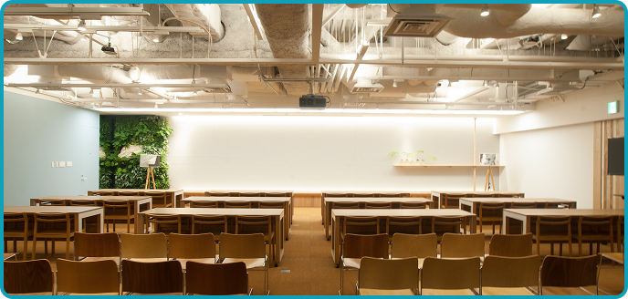
3×3 Lab Future東京都千代田区大手町１丁目１−２ 大手門タワー・ENEOSビル 1F
-
DAY2 7.29 [Wed]
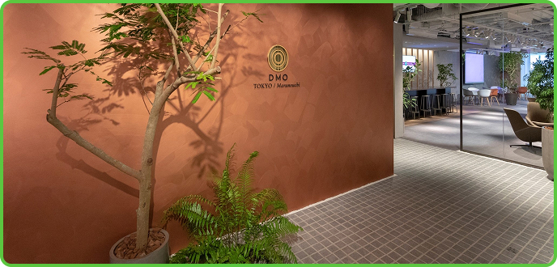
DMO Tokyo Marunouchi東京都千代田区丸の内３丁目２－３ 丸の内二重橋ビル 6F
-
DAY3 7.29 [Wed]
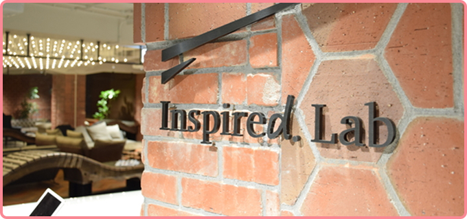
Inspired. Lab東京都千代田区大手町１丁目６−１ 大手町ビル 6F
News
-
東大 Week@Marunouchi 2026 年度の開催が決定いたしました！
FAQ
-
Q.事前の申込みが必要ですか？
A.事前申込み制（先着順）です。当日参加は受け付けておりません。ご希望の会場の「申し込む」ボタンをクリック、「Peatix」に進んでいただき、申込み手続きをお願いいたします。
-
Q.事前申込みはいつまで受付をしていますか？
A.各日程の前日12:00まで受付をしております。但し、先着順となりますので定員になり次第、締め切ります。
-
Q.参加費はいくらですか？
A.各会場1,000円です。
-
Q.2日目は希望の先生の講演だけ選んで申込み・参加はできますか？
A.7月29日は全て会場単位のお申込み・ご参加となります。1つの講演を選んでのご参加や複数会場へのご参加はできませんのでご了承ください。
ご希望の会場を1つ選んでお申込みをお願いいたします。 -
Q.複数人で参加したいのですが、一度の申込みで複数チケットの購入は可能ですか？
A.一度にお申込みができるチケットは2枚までです。
-
Q.申込みをキャンセルしたいです。
A.参加規約のキャンセル規定をご確認の上、事務局（info@todaiweek-marunouchi.jp）までご連絡ください。
-
Q.希望の会場が満席になっています。
キャンセル待ちは出来ますか？A.キャンセル待ちの受付は行っておりません。キャンセルが発生した場合は、その都度申込み受付を再開いたしますので、お申込みページ（Peatix)にて随時ご確認ください。
-
Q.参加申込みに条件はありますか？
A.18歳以上の方はどなたでもお申込みいただけます
-
Q.録音・録画をすることはできますか？
A.会場内における撮影はご遠慮頂いております。
Contact
東大Week@Marunouchi事務局
メールにてお問い合わせください。